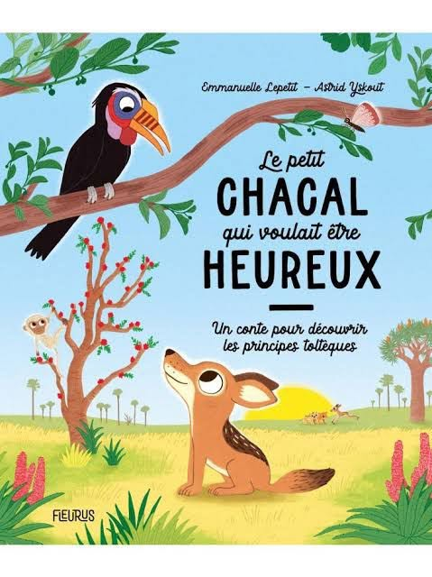

Yenayas wuchene :
« Adiga rebbi,
Anevdu amayene,
Lexxrif xxerfayen,
Ecetwa yumayene,
Ma tafsut dayem. »
On dit chez nous que le chacal a émit ce vœu qui n'a jamais été exaucé :
« Que l’été dure deux ans,
Que l’automne dure deux saisons,
Que l’hiver dure deux jours,
Et le printemps pour toujours »
Adage kabyle
Le vœu du chacal
Sous le ciel brûlant, je fais serment,
Que l’été s’étire deux ans durant,
Que la chaleur danse au sable doré,
Et que la lumière ne veuille s’effacer.
Que l’automne, doux chant mélancolique,
S’installe deux saisons en robes rustiques,
Avec ses feuilles comme des soupirs,
Un écho d’or qui refuse de mourir.
Mais l’hiver, cruel dans son manteau glacé,
Qu’il dure à peine deux jours effacés,
Juste assez pour blanchir les cimes,
Puis qu’il s’en aille vers d’autres abîmes.
Enfin, le printemps, doux rêve infini,
Que tes fleurs s’ouvrent en paradis,
Que chaque aurore soit une renaissance,
Et que ta douceur sculpte l’existence.
Ô vent du désert, emporte ce souhait,
À la lune complice qui ne l’entendra jamais,
Le chacal murmure, sous la voûte étoilée,
Un vœu d’éternité pour le temps enchanté.
Djamel Metref
At Yenni le 18 février 2025

← Tous les poèmes